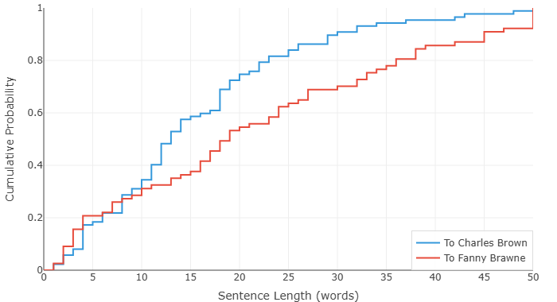

济慈的最后几封信 — 句子告诉了我们什么
约翰·济慈于 1821 年 2 月 23 日死在罗马，二十五岁。他葬在新教公墓，墓碑上没有名字，只刻着他自己要的那句话："此地长眠者，声名水上书。"
生命的最后两年，济慈写了不少信。我们收集了其中的两组。第一组，三封信，写给芬妮·布朗——他深爱的女人，爱到近乎病态，爱得无法呼吸。最早的一封写于 1819 年 7 月，字里行间全是迷恋："你的来信带给我的快乐，超过了世上一切，除了你自己。" 到 1820 年 2 月，语气已经变了——他已经病了，已经开始写"如果我会死"这样的话。
第二组，两封信加一纸短笺，写给好友查尔斯·布朗，时间是 1820 年末，从驶往意大利的船上和罗马寄出。这是诀别信。肺结核已经宣判了死刑。他在离开英格兰，离开芬妮，离开一切。他对布朗写道："我日日夜夜祈愿死去，好让我从这些痛苦中解脱——而后我又祈愿死亡远走，因为死亡会毁掉那些痛苦，而它们比虚无要好。" 还有那句回荡了两个世纪的话："我能承受死去——我不能承受离开她。"
两组信，同一只手执笔，写给两个他深爱的人，相隔一年左右。但它们是由两个不同的人写下的——或者说，是同一个灵魂，在生命弧线的两个截然不同的时刻写下的。一个还爱着，还盼着。另一个，已经在走了。
我们把两组信放进写作风格分析器跑了一遍。数据显示出的东西，安静，精准，令人难过。
情书：不肯结束的句子

两条曲线，差距一目了然。致芬妮的情书——那条赖在右边的线——由绵长的、缠绕的句子构成。这些不是福克纳式的语法实验，而是一个不忍心停下与爱人说话的男人才会写出来的话。一个句子结束，又一个句子开始，每个句号都被往后推。书写本身在喘息，因为书写者就在喘息——不为疾病所迫（那时还早），只为思念所困。
在 1819 年 7 月那封信里，济慈写道："即便不想着你的时候，我仍感到你的影响，一种更温柔的天性悄悄覆上我。我所有的思绪、那些最不快乐的白昼和黑夜，我发现，根本未曾治愈我对美的爱，反而让它变得如此炽烈，以至于你不在我身边我就痛苦不堪。" 这是一句话。它从头到尾没有真正停顿过，破折号和逗号不是语法结构，是他喘了口气又一头扎进去的地方。句长曲线捕捉到的正是这个：情书铺展开来，拖得很远，拒绝一个短句带来的终结感。短句意味着话说完了，而他不想把话说完。
再看致布朗的诀别信。它的曲线紧贴着左边走——句子更短、更直接、更没有余地。这是一个已经没有精力再铺排文字的人写的，也无需再铺排。当每个词都可能是最后一个，你选词的逻辑就变了。两条曲线之间的那片空间，就是"没有你我活不下去"和"我觉得我的时间很短了"之间的距离——是伸出手，和松手。
爱的词汇与诀别的词汇

词频图的差异没有那么刺眼。情书的用词稍丰富一些——曲线微微偏右，说明济慈更频繁地用到了不那么常见的词。这很自然。1819 年 7 月的信写在尚算健康的时期，心智还能自由驰骋。更何况爱情本身就需要更大的词汇量：你得为渴望找词，为期待找词，为喜悦和绝望之间一千种微妙的情绪找词。
诀别信的词汇更收敛——不是贫瘠，而是更多的词落在了日常用语的范围内。快死的人不会再去找生僻词。他用最干净的语言说最重要的话。济慈告诉布朗："我习惯性地感到我真正的生活已经过去了，我正在过一种死后的存在。" 这仍然是一句极美的话，但词都很朴素。习惯性。感到。生活。过去。存在。每个词都普通，每个词都扛着全部重量，不施粉黛。然而即便是这样的时刻，仍有一句话冲破了所有克制——"哦，上帝！上帝！上帝！我箱子里所有让我想起她的东西，都像长矛一样穿过我。" 将死之人的词汇很简单，但从不软弱。
两条曲线没有句子长度那两张离得那么远。这也是对的。两组信出自同一颗大脑，住在同一套词汇里。变了的不是他的语言能力，是他跟时间的关系。有时间的时候，句子会展开，词语会徘徊。时间快用完的时候，句子会缩紧，词语直奔主题。
一点建议
济慈致芬妮和致布朗的信都在公共领域，几分钟就能在网上找到全文。如果这篇短文让你心头动了一下，不妨去读一读原信——不是读数据，是读那些字。图表能让人看到一颗心在碎裂、在停止跳动时的大概形状，但字本身，值得你自己去看。
他走的时候二十五岁。他说自己的名字写在水里。他说错了。